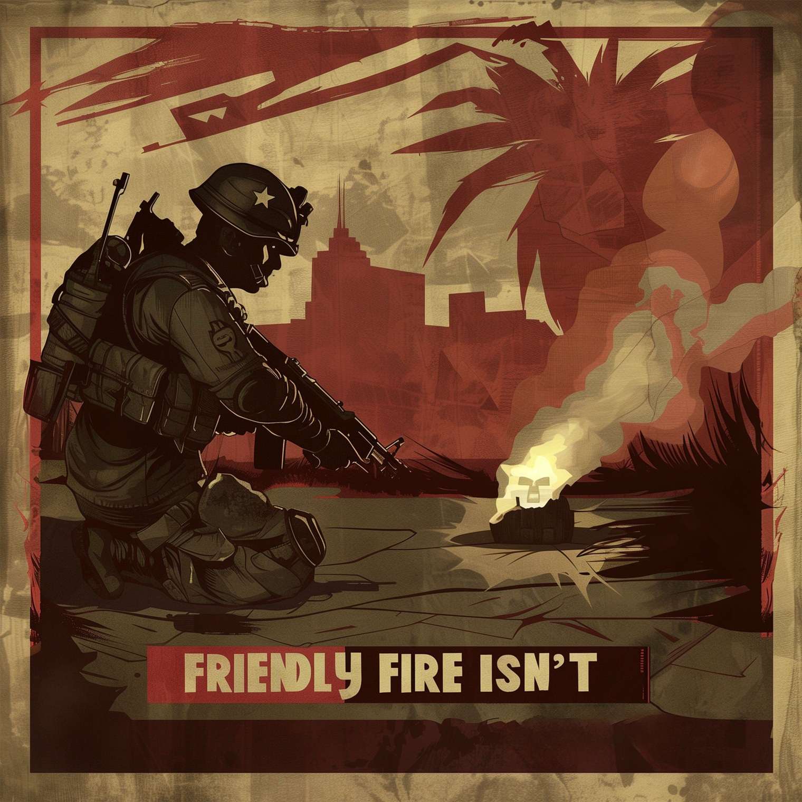
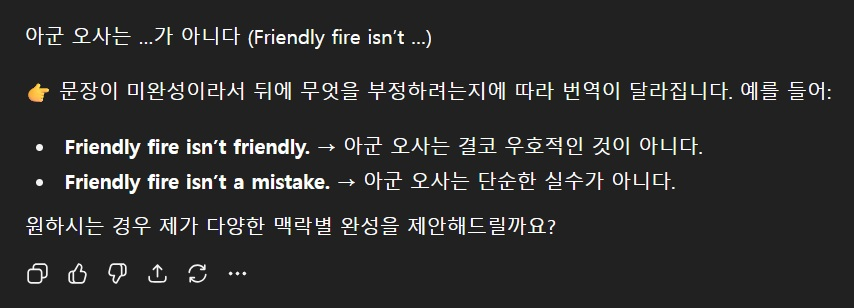
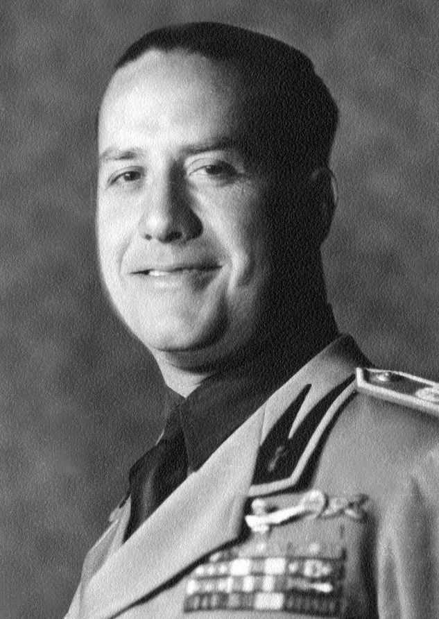
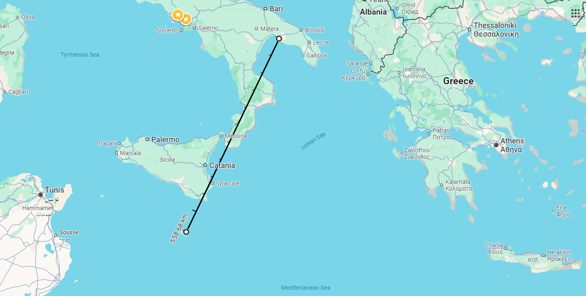
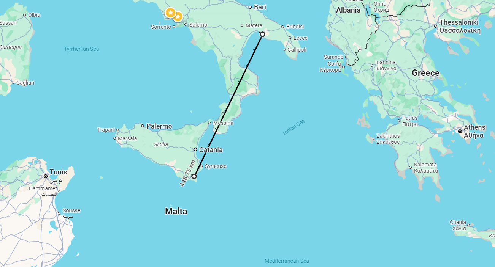
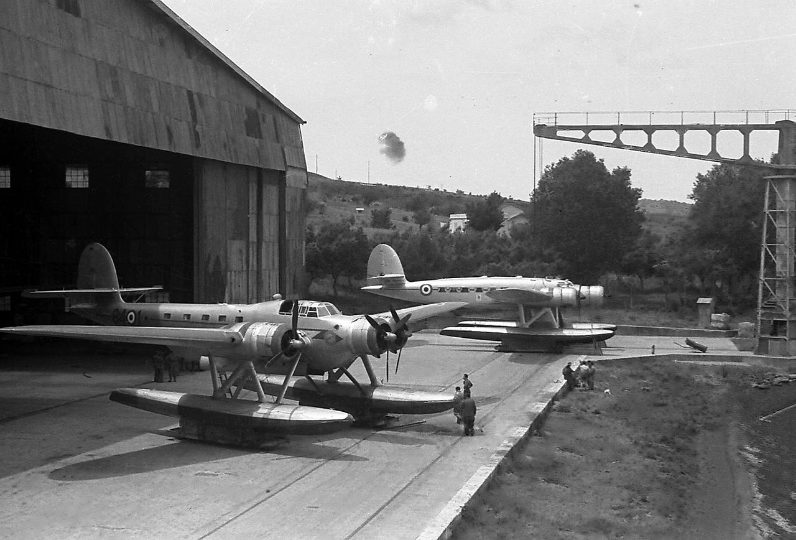
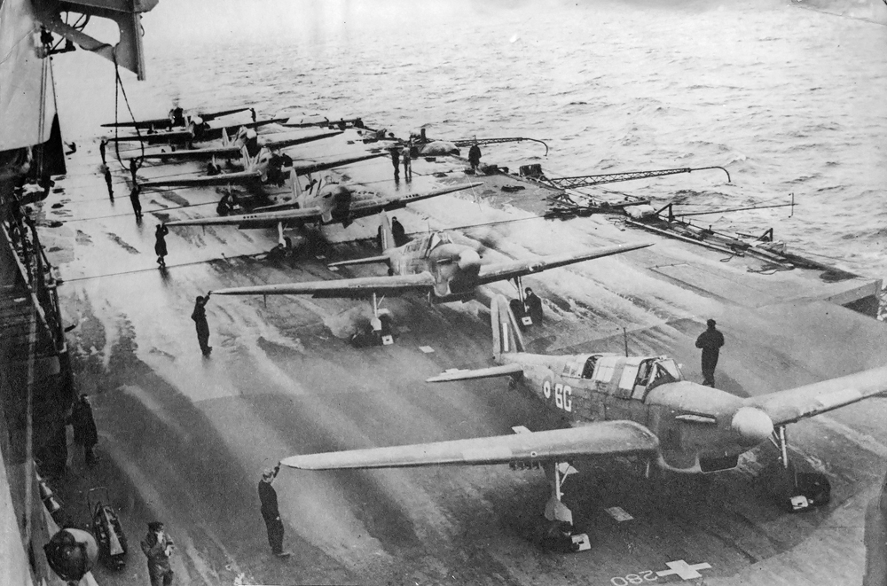
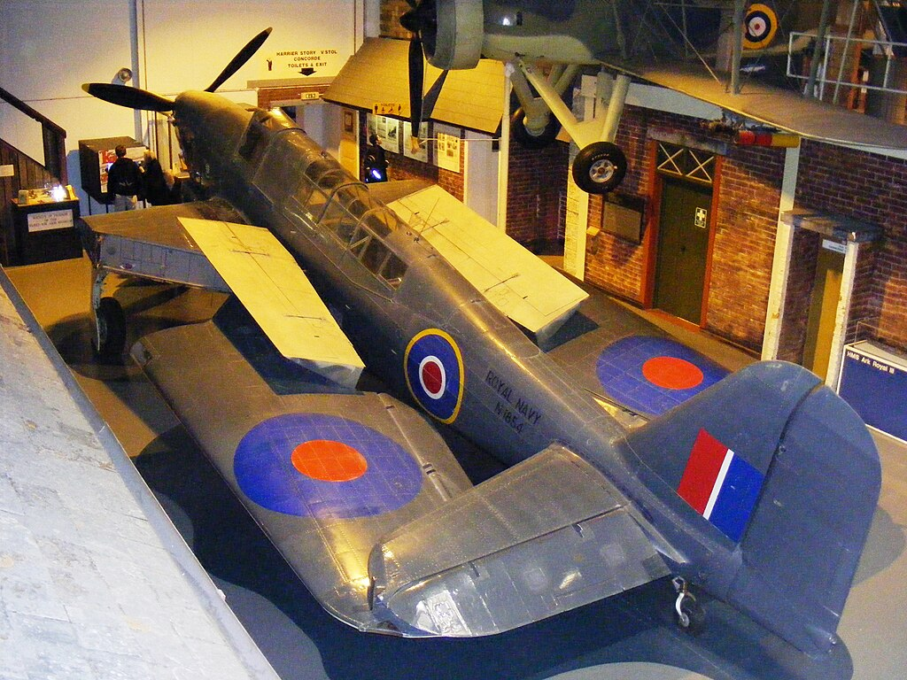
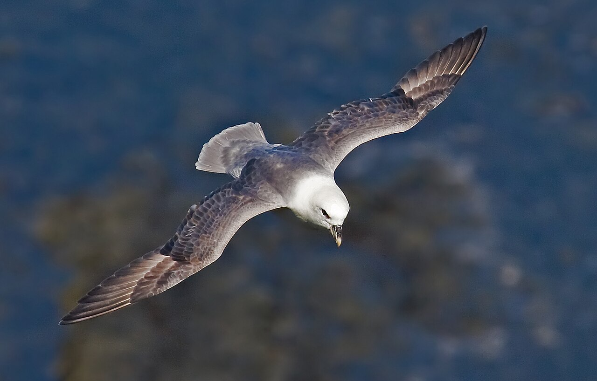

WW2 중 항모에서의 야간 작전 (30) - 억울한 이탈리아 공군
게시: 2025-09-11T06:30:16+09:00
<Friendly fire... isn't> 2차례에 걸쳐 날아든 소드피쉬 20대에 대해 타란토의 이탈리아군이 쏘아댄 대공포의 양은 아래와 같음. 12.5cm 포 1,430발 10.7cm 포 313발 8.8cm 포 6,854발 40mm 기관포는 931발 20mm 기관포 2,635발 이건 순수하게 해변의 지상 배치 대공포에서 쏘아댄 것의 합이고, 항구의 군함들에서 쏘아댄 것은 집계되지 않았음. 이렇게 1만 발이 넘는 포탄을 쏘아올리고도 느림보 Swordfish를 고작 2대 잡았다는 것은 놀라운 일인데, 실은 어둠 속에서 벌어진 일이다보니 어느 정도 이해는 감. 특히 이탈리아군은 아군 선박이 항구에 가득하고 또 바로 인근에 민간인 거주 지역이 밀집해 있는 상황을 고려하여, 아군 대공포탄에 의한 피해를 최소화하기 위해 사격 고도와 방향에 대해 무척이나 조심했음. 그래서 소드피쉬들이 대부분 살아남은 것. 덕분에 이탈리아측의 friendly fire (아군 사격)에 의한 피해는 놀랍도록 적었음. 그렇게 민간인들이 많이 거주하는 장소에서, 적어도 '보고된' 민간인 피해는 전혀 없었음. 이건 매우 놀라운 일이고, 아마 실제로는 있었어도 무쏠리니의 심기를 고려하여 굳이 집계를 안 한 것일 수도. 가령 1941년 12월의 진주만 습격에서, 미군 대공포탄에 의한 피해는 민간인 피해만도 30~40명 사망에 60~70명의 부상자를 냈음. 미군 사상자 수 중 아군 사격에 의한 사상자 수는 명확히 집계되지는 않았으나, 많았던 사상자 중 적어도 수십 명은 일본제 폭탄이 아니라 미군 대공포탄에 의한 것이었을 것이라고 추정.

(Friendly fire isn't 라는 말은 friendly fire (아군의 오인 사격)이라는 표현의 friendly (우정어린, 아군의)라는 단어가 전혀 어울리지 않는다는 뜻으로서, 영어의 간결함을 최대로 살린 유머. 굳이 번역하면 '오인 사격은 friendly 사격이라고 하지만 전혀 friendly하지 않더라' 정도. 번역하면 그 맛이 살려지지 않음.)

(참고로 저 표현을 chatgpt에게 번역시키면 저렇게 나옴. 아무리 AI 시대라지만 재미있게 살려면 외국어를 여전히 배워야 한다는 것을 보여줌. 그러나 나중에는 AI가 오히려 더 유머 감각이 더 뛰어나게 될 수도.) <피해> 이탈리아 해군의 인명 피해도 의외로 적었음. 전함 3척이 격침 내지는 그에 준할 정도로 대파 되었으나 리토리오에서 23명, 카부르에서 16명, 듈리오에서 1명이 사망한 정도. 물론 많다면 많은 수이지만 전함의 물적인 피해에 비하면 적은 편. 이탈리아 전함들의 심각함에 대해서는 아래 인용구들이 잘 보여줌. "암울한 날이다. 영국군이 아무런 경고도 없이 타란토에 정박해 있던 이탈리아 함대를 공격하여, 드레드노트 카보르를 격침시키고 전함 리토리오와 둘리오에 심각한 손상을 입혔다. 이들 전함은 수개월 동안 전투에 참가할 수 없을 것이다. 나는 두체(Duce, 무쏠리니)가 낙담해 있을 것이라 생각했다. 그러나 그는 이 타격을 꽤 담담하게 받아들였으며, 지금 당장은 사태의 심각성을 완전히 깨닫지 못한 듯하다." — 치아노(Ciano) 백작, 무솔리니의 사위

(이 양반이 무쏠리니의 사위인 치아노 백작 Galeazzo Ciano. 이 사람 아버지가 이탈리아 파시스트 창립 멤버 중 하나일 정도로 처음부터 파시스트였고, 치아노는 장인어른인 무쏠리니의 후광도 입어서 장차 무쏠리니의 후계자 1순위로 뽑히던 인물. 그러나 WW2가 진행되면서 여기저기서 패전이 거듭 되자, 그는 전쟁 및 무쏠리니에 대해 회의적인 태도를 가지게 되었고, 무쏠리니에 대해 뒷담화도 자주 했음. 그런데 그 뒷담화가 무쏠리니에게 그대로 보고될 줄은 몰랐음. 결국 그는 무쏠리니와 사이가 크게 벌어졌고, 나중에 내각 투표에서도 무쏠리니 축출에도 찬성표를 던졌음. 그러나 이 사람은 지은 죄가 많아서 새로 세워진 이탈리아 정부 치하에서 살아남을 가능성이 없었으므로 독일로 도망갔는데, 나찌 독일은 치아노가 무쏠리니의 실각에 꽤 책임이 있다고 보고 그에게 적대적이었음. 결국 그는 나찌 독일에 의해 이탈리아 신정부에게로 압송된 드문 케이스 중의 하나가 되었고, 그는 이탈리아 신정부에 의해 총살됨.)
"하룻밤 사이에 함재기들이 적에게 입힌 피해는 넬슨이 트라팔가 해전에서 입힌 것보다 더 컸으며, 제1차 세계대전의 유틀란트 해전에서 영국 함대 전체가 가한 피해의 거의 두 배에 달했다." — 보이드(Boyd) 함장, HMS Illustrious “하원에 전할 소식이 있습니다. 좋은 소식입니다. 영국 해군이 이탈리아 함대에 치명적인 일격을 가했습니다. 이탈리아 전함대의 전력은 전함 6척으로, 그중 2척은 막 실전에 투입된 ‘리토리오’급으로 세계에서 가장 강력한 전함들 중 하나이며, 나머지 4척은 최근에 재건된 ‘카부르’급 전함이었습니다. 이 함대는 서류상으로는 우리의 지중해 함대보다 훨씬 강력했지만, 전투에 나서기를 거듭 거부해 왔습니다. 11월 11일에서 12일 밤 사이, 이탈리아 함대의 주력함들이 타란토 해군기지의 해안 방어망 뒤에 정박해 있을 때, 우리 함재기들이 그 요새를 기습 공격했습니다. … 이탈리아 측은 11월 12일 공보에서 전함 1척이 심각한 피해를 입었다고 인정하면서, 우리 항공기 6대를 격추시키고 3대를 추가로 격추했을 가능성이 있다고 주장했습니다. 그러나 실제로는 항공기 2대만 실종되었으며, 일부 승무원들이 포로가 되었다고 적의 발표에서 확인됩니다. 저는 이 영광스러운 사건을 즉시 하원에 보고하는 것이 의무라고 생각했습니다. 결연하고 대단히 성공적인 이번 공격의 결과, 이는 해군 항공대에 최고의 영예를 안겨주었으며, 이제 이탈리아 전함은 단 3척만이 작전 가능한 상태로 남게 되었습니다.” — 윈스턴 처칠, 영국 수상 <이게 다 젤라또나 처먹는 공군 때문이다!> 이탈리아 해군을 특히 분노시킨 것은 영국해군이 아니라 이탈리아 공군. 애초에 이탈리아 공군은 '영국해군 군함이 탐지되지 않고 이탈리아 영토 180마일 (288km) 내로 들어오는 일은 절대 없을 것'이라고 큰 소리를 쳤었음. 일반적으로 함재 폭격기의 전투 반경이 그 정도였기 때문. 실제로도 Illustrious가 소드피쉬를 날려보낸 것은 170마일 거리. 그런데도 이탈리아 해군은 아무런 조기 경보를 받지 못했음. 이탈리아 공군으로서는 "HMS Illustrious가 깜깜한 밤에 몰래 들어왔는데 레이더도 없는 우리가 어떻게 그걸 미리 알아채란 말인가?" 라고 억울해할 수 있으나, 충분한 변명은 아니었음. 애초에 영국해군이 야간 공습을 수행할 것은 충분히 예측 가능한 일이었음. 그래서 타란토 항구에 정박한 이탈리아 해군함들에서는 평상시 야간에도 대공포대에는 인원을 배치하고 있었던 것. 그렇다면 이탈리아 공군에게 당근 많이 먹고 야간 투시력이라도 키우라는 것인가? 그게 아니라 그런 야간 공습이 예상된다면, 야밤에 몰래 소드피쉬를 날리려고 이탈리아 쪽으로 달려오는 영국 항공모함을 아직 햇빛이 남아 있을 때 포착하기 위해 훨씬 더 멀리 정찰을 실시했었어야 한다는 이야기. 그래서 이탈리아 해군은 향후엔 이탈리아 공군이 정찰 반경을 180마일이 아니라 그 두 배인 360마일(576km)로 늘려야 한다고 요구. 이건 좀 지나친 요구이긴 함. 타란토에서 영국군 거점인 말타섬까지의 거리가 대략 560km일 정도로 먼 거리이기 때문.

(타란토에서 반경 576km는 말타섬까지의 거리보다 먼 거리) 하지만 어차피 영국 항모는 해가 진 뒤에 작전 반경 안인 288km 안에 들어왔다가 해가 뜨기 전에 빠져 나가야 한다는 점을 고려하면 실제로 정찰해야 할 거리는 더 짧았음. 특히 소드피쉬가 어뢰를 매달고 낼 수 있는 최대 속도가 약 230km/h 인데, 항모에서 이함한 뒤 편대를 이루고, 항법 오차를 수정하고, 뇌격을 실시하고, 다시 돌아가면서 또 오차를 수정하고, 착함하는데도 시간이 놀랍도록 많이 필요하여 실제로 타란토 공습에 참여했던 소드피쉬들은 대략 6시간 정도 비행했다는 점을 고려해야 함. 그러니까 해가 졌다가 뜨기까지 12시간 걸린다고 가정하면, 그 중 6시간 정도는 소드피쉬를 날려보낸 뒤에 항모가 대기하는 시간이므로, 항모가 어둠 속에서 항행할 수 있는 시간은 6시간이고, 절반은 나오는데 시간을 써야 하므로 결국 어둠 속에 움직일 수 있는 시간은 3시간. 그러니까 30노트의 속도로 3시간 달릴 수 있는 거리만큼 이탈리아 공군 정찰기가 더 멀리 정찰하면 HMS Illustrious의 야간 습격을 미리 포착할 수 있었던 것. 그 거리는 약 160km, 즉 100마일. 그러니까 애초에 180마일이 아니라 280마일 밖까지 초계기를 뛰웠어야 했던 것. 그 정도의 거리는 타란토에서 시칠리아 섬 남쪽 끄트머리 정도의 거리이므로 이탈리아 정찰기들이 충분히 초계할 수 있는 거리.

(타란토에서 시칠리아 섬 남쪽 끄트머리 정도가 280마일(448km)) 이탈리아 공군으로서는 여전히 억울한 이야기. 위의 계산을 보면 이탈리아 공군이 단지 게을러서 160km 밖의 거리까지 초계를 안 했기 떄문에 이런 참사가 벌어졌다는 식으로 보이기 때문. 실제로도 이탈리아 공군 정찰기들은 이 정도의 초계 능력이 충분했고, 대수도 충분했음.

(지난 편에 소개한 이탈리아 공군 비행정 CANT Z.506 Airone (왜가리). 이 비행정은 300km/h의 비교적 빠른 순항 속도로 2,000km를 비행 가능. 제작된 대수는 300여대.) 그런데 왜 안 했을까? 실은 했음! 했는데 어느 정도 남쪽 해역까지 접근하면 꼭 만나게 되는 것이 바로 Fulmar 함재 전투기들. 이탈리아 공군 전투기들의 엄호를 받을 수 없는 먼 바다에서 Fulmar 전투기를 만나면 크기만 할 뿐 느리고 굼뜬 비행정들은 대개 격추당하는 수 밖에 없었음. 실제로 많은 비행정들이 영국 해군 항모를 보기도 전에 그렇게 불귀의 객이 되었음.

(사실 Fairey Fulmar는 전투기치고는 너무 느려서, 레이더의 유도를 받고 이탈리아 정찰기의 진행 방향 앞쪽에 미리 가서 매복하지 않는다면 이탈리아 정찰기를 추격하여 따라잡아 격추하기는 매우 어려웠음. 결국 1942년 초 태평양에서 이탈리아군과는 달리 만만치 않은 상대인 일본해군과 붙었을 때, 일본해군 함재 폭격기와 독파이팅을 벌이다 격추되어 버리는 굴욕을 당함.)

(이건 박물관에 전시된 Fairey Fulmar 전투기. 함재 전투기답게 저렇게 날개를 접을 수 있고, 항법사를 태우기 위해 전투기임에도 2인승으로 설계되었음.)

(참고로 fulmar는 영국 북쪽 바다 등 추운 바다에 서식하는 갈매기의 일종)
Fulmar 전투기들의 항속거리는 CANT 비행정보다 훨씬 짧아서 1200km에 불과하므로, 망망대해를 무턱대고 오랫동안 초계할 수는 없음. 그런데 아무것도 없는 망망대해에서, Fulmar 전투기들은 어떻게 그렇게 자주 이탈리아 비행정과 마주쳐서 격추를 기록할 수 있었을까? 이탈리아 공군은 잘 몰랐으나 우리는 알고 있음. 바로 radar. HMS Illustrious의 radar가 이탈리아 공군 정찰기들을 아주 먼 거리에서 포착하여 Fulmar 전투기들을 그 위치로 정확히 유도해주었던 것. 결국 이탈리아 공군에겐 영국 항모를 발견하고 공격할 기회가 처음부터 없었던 것.